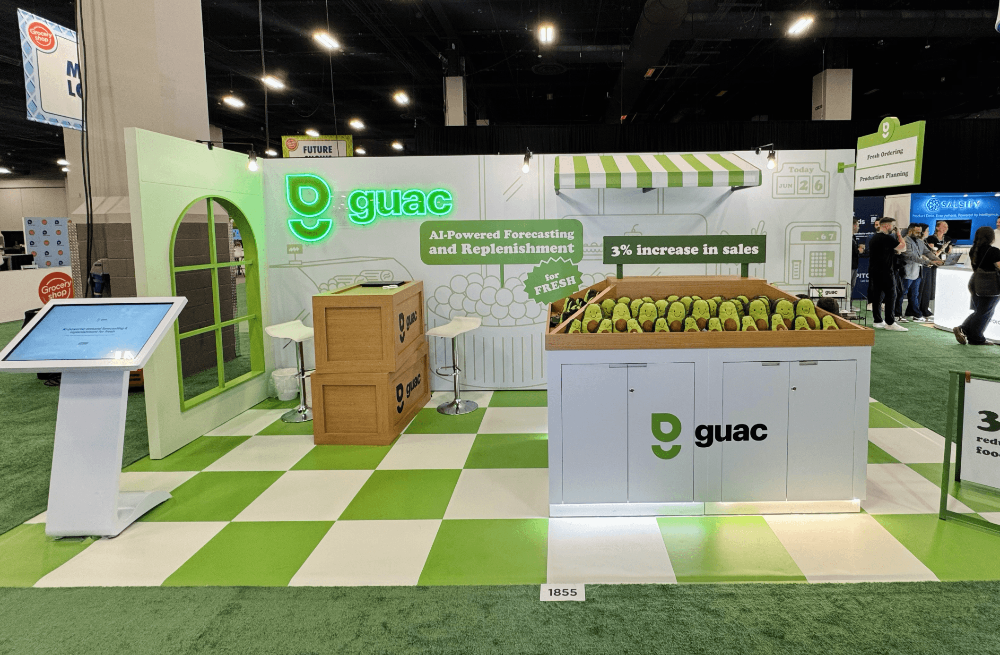

Guac Exhibition Booth, 2025

Intro
I was the founding designer for Guac's booth at Groceryshop in Vegas, directing the creative vision and working with team members and external vendors.
My goal was to create a memorable and exciting exhibit space that would instill confidence in Guac's product suite.

Direction
The space drew inspiration from 1970s grocery design, referencing the UPC's 1974 debut through elements like a neon logo, fruit crate displays, tiled flooring, and custom signage.
The finished design balanced Guac's identity, detail oriented, smart, and modern, while providing a welcoming environment for product demonstrations and customer interactions.


Swag


Social

Grocery circular
I also designed a vintage grocery circular inspired by the 1970's era, using this traditional advertising format to showcase Guac's products in a nostalgic manner connected to the booth's overall narrative.